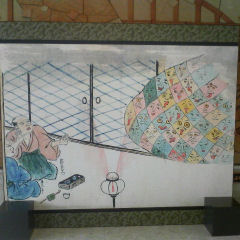

広島県立歴史民俗資料館
平成２１年
７/３（金）〜８/３０（日）
夏の展示会
三次の妖怪ものがたり
に行ってみた。
（特別展は既に終了）
展示室では
貴重な資料を
保護するために
撮影禁止なので
休憩ホールの
パネルを
紹介する。
二十七日、
網顔の怪の場面。
大雑把に言うと
稲生物怪録
（いのうもののけろく）
とは、一カ月の間に
稲生平太郎
（いのうへいたろう）
という
モノノフのワカモノが
モノノケと対峙する
モノガタリ。
登場するモノノケは
個性的な
モノばかり。
モノは
単なる物（もの）
だけではない。
やまとことばでは
人間もまた
者（もの）である。
さらに、目に見えない
鬼（もの）も含む。
ものとものが
相互に作用する事で
様々な事が起こる。
参考文献
帝都幻談
荒俣宏 著